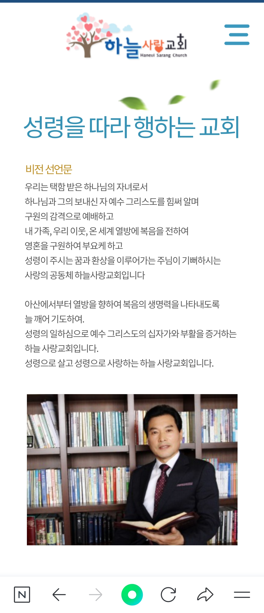

ABOUT

아산하늘사랑침례교회는 1951년 11월 20일, 배방 월전리 가정집에서 월천교회로 시작되었습니다. 이후 아산열방교회를 거쳐 2017년 하늘사랑교회로 이름을 이어 왔으며, 2018년부터 배방읍 월천2길 33의 새 성전에서 예배하고 있습니다.
우리는 택함 받은 하나님의 자녀로서 하나님과 그의 보내신 자 예수 그리스도를 힘써 알며, 구원의 감격으로 예배합니다. 내 가족, 우리 이웃, 온 세계 열방에 복음을 전하여 영혼을 구원하며, 성령이 주시는 꿈과 환상을 이루어 가는 사랑의 공동체가 되기를 원합니다.
아산에서부터 열방을 향해 복음의 생명력을 나타내도록 늘 깨어 기도하는 교회, 성령으로 살고 성령으로 사랑하는 교회이기를 소망합니다.

1951.11.20 월천교회 창립 (월전리 김태삼 집사 가정)
1968.07.26 예배당 40평 완공
1993 연건평 148평 성전 헌당
2007.12.22 이상린 목사 취임, 아산열방교회로 개명
2017.03.05 새 성전 기공, 하늘사랑교회로 명칭 결정
2018.03.25 새 성전에서 예배 시작
2019.10.03 새 성전 헌당예배
2020.06.21 임직감사예배
자세한 목회자 시기는 사무실로 문의하시면 안내해 드립니다.